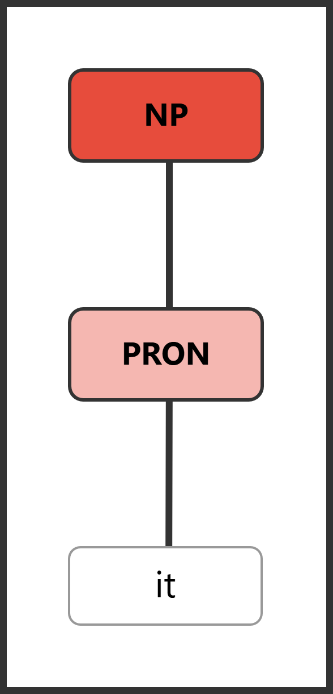

Section 6.3 Pronouns
Pronouns replace noun phrases. They are the stand-in system of language—compact pointers that take the place of full descriptions. Instead of repeating a long or complex noun phrase every time we refer to an entity, we can substitute a short pronoun that listeners understand as referring to the same thing. This makes language dramatically more efficient, but it also requires listeners to track what each pronoun refers to.
Pronouns encode several kinds of relational information in a remarkably small package. They mark person—distinguishing the speaker (I, we) from the addressee “you” from everyone else (he, she, it, they). They mark number—singular versus plural. In the third person singular, they mark gender (he, she, it). And they mark case—whether the pronoun is functioning as a subject (I, she, they) or an object (me, her, them). A single pronoun like “her” simultaneously tells you: third person, singular, feminine, object case. That is a lot of grammatical information packed into one syllable.
Pronouns also serve a crucial role in connecting sentences to each other. When you read “The professor entered the room. She placed her notes on the desk.”, the pronouns “she” and “her” create cohesion—they link the second sentence back to the first by referring to the same person. Without pronouns, every sentence would stand in isolation, and readers would have to re-identify every entity from scratch each time it was mentioned.
The tradeoff is that pronouns are efficient but potentially ambiguous. They require listeners to track references—to remember who “she” is, what “it” refers to, and which group “they” picks out. When this tracking breaks down, communication fails. Ambiguous pronoun reference is one of the most common writing problems, and we will return to it later in this section.
Why Pronouns Exist.
Imagine language without pronouns:
Maria said that Maria wanted Maria’s book back, but John told Maria that John had already returned Maria’s book to Maria’s office.
Now with pronouns:
Maria said that she wanted her book back, but John told her that he had already returned it to her office.
Pronouns reduce redundancy and improve processing. The second version is not only shorter but easier to read and understand. The repeated proper nouns in the first version are distracting, and they actually make the sentence harder to process because the reader has to work to determine whether each instance of “Maria” refers to the same person or potentially different people. Pronouns, by contrast, signal continuity: they tell the reader that the same entity is still being discussed.
Pronouns Replace Entire Noun Phrases.
An important principle to understand is that pronouns do not just replace the head noun—they replace the entire noun phrase, including all of its modifiers. When you substitute a pronoun for a noun phrase, the determiner, any adjectives, and any post-modifiers all disappear, collapsed into the single pronoun.
Consider the noun phrase “the brilliant young student from Ohio”. This phrase contains a determiner “the”, two adjectives (brilliant, young), a head noun “student”, and a prepositional phrase modifier “from Ohio”—six words in total. When we replace this NP with a pronoun, the entire six-word phrase becomes “she”. The pronoun does not replace just “student”; it replaces the whole expression.
The following diagram pairs illustrate this principle. In each pair, the first diagram shows a full noun phrase with its internal structure, and the second shows how that entire structure collapses to a single pronoun.
Full NP: The tall student sleeps.

[S [NP [DET The] [ADJP [ADJ tall]] [N student]] [VP [V sleeps]]]
Pronoun replacement: She sleeps.

[S [NP [PRON She]] [VP [V sleeps]]]
Notice that the three-word noun phrase “the tall student”—with its determiner, adjective phrase, and noun—has been entirely replaced by the single pronoun “She”. The NP node in the tree now contains only the pronoun.
Full NPs: The teacher gave the young student a book.

[S [NP [DET The] [N teacher]] [VP [V gave] [NP [DET the] [ADJP [ADJ young]] [N student]] [NP [DET a] [N book]]]]
Pronoun replacement: She gave me a book.

[S [NP [PRON She]] [VP [V gave] [NP [PRON me]] [NP [DET a] [N book]]]]
In this pair, two of the three noun phrases have been replaced by pronouns. “The teacher” becomes “She”, and “the young student” becomes “me”. The third NP, “a book”, retains its full form. This illustrates a common pattern: in real language, some NPs in a sentence are pronominalized while others are not, depending on which entities have already been introduced.
The same principle applies to complex noun phrases with post-modifiers:
Full NP: The old car on the corner.

[NP [DET The] [ADJP [ADJ old]] [N car] [PP [PREP on] [NP [DET the] [N corner]]]]
Pronoun replacement: it.

[NP [PRON it]]
Here the entire complex noun phrase—determiner, adjective, head noun, and prepositional phrase modifier—collapses to the single pronoun “it”. The pronoun stands in for all of that structure. This is why we say that pronouns replace noun phrases, not just nouns. Whether the original NP is two words or ten, the pronoun takes over the entire position.
Antecedents.
The noun phrase that a pronoun refers back to is called its antecedent. The word antecedent comes from Latin, meaning "going before"—and in most cases, the antecedent appears earlier in the text than the pronoun that refers to it. Identifying antecedents is crucial for understanding sentences correctly and for writing clearly.
In the following examples, the antecedent is in bold and the pronoun referring to it is in sans-serif:
-
The professor said she would return the papers.
-
My brother hurt himself playing soccer.
-
The students submitted their assignments on time.
-
Maria told John that she would be late, but he didn’t believe her.
-
The committee released its report last week.
In each of these sentences, the connection between the pronoun and its antecedent is clear. The reader has no trouble determining who “she”, “himself”, “their”, or “its” refers to because only one noun phrase in the sentence matches the pronoun’s features (person, number, gender).
However, ambiguous pronoun reference is one of the most common writing problems. It occurs when a pronoun could plausibly refer to more than one antecedent:
-
Maria told Sarah that she should leave.
Who should leave—Maria or Sarah? Both are third-person singular feminine, so the pronoun “she” could refer to either one. The reader is left guessing. In cases like this, the writer needs to restructure the sentence to eliminate the ambiguity: “Maria told Sarah, "You should leave"” or “Maria told Sarah, "I should leave."”
A good rule of thumb: whenever you use a pronoun, make sure the reader can identify the antecedent without hesitation. If there is any doubt, repeat the noun or rephrase the sentence.
Personal Pronouns.
Personal pronouns are the most common type. They vary for:
-
Person: 1st (speaker), 2nd (addressee), 3rd (other)
-
Number: singular vs. plural
-
Case: subject vs. object
-
Gender (3rd person singular): masculine, feminine, neuter
| Person | Number | Gender | Subject | Object |
|---|---|---|---|---|
| First person | Singular | — | I | me |
| Second person | Singular | — | you | you |
| Third person | Singular | Masculine | he | him |
| Third person | Singular | Feminine | she | her |
| Third person | Singular | Neuter | it | it |
| First person | Plural | — | we | us |
| Second person | Plural | — | you | you |
| Third person | Plural | — | they | them |
Pronouns also have possessive forms that function as determiners (my, your, his, her, its, our, their) or as standalone pronouns (mine, yours, his, hers, ours, theirs). These are discussed in section 6.2 under possessive determiners.
When the Same Word Is a Pronoun or a Determiner.
Several words can function as either a pronoun or a determiner depending on their position in the sentence. The key distinction is simple: if the word stands alone in place of a noun phrase, it is a pronoun. If it appears before a noun to introduce a noun phrase, it is a determiner.
Consider “her”:
-
I saw her. — her is a pronoun (it replaces an entire NP and stands alone as the object)
-
I read her book. — her is a determiner (it introduces the noun phrase her book, specifying whose book)
The same pattern applies to other possessive forms. When (his, my, your, our, its, their) appear before a noun, they function as determiners. Some of these also have standalone pronoun forms: (mine, yours, his, hers, ours, theirs).
Demonstratives show the same dual behavior:
-
This is interesting. — this is a pronoun (stands alone as the subject)
-
This book is interesting. — this is a determiner (introduces the NP this book)
The word class of these forms depends entirely on how they are used in a particular sentence, not on the word itself. Context determines category.
Case matters: Use subject forms for subjects, object forms for objects:
-
Subject: She left. (not
Her left.) -
Object: I saw her. (not
I saw she.) -
After preposition: with me (not
with I)
Singular "they": Increasingly accepted for indefinite reference and for people who don’t identify as he or she:
-
Someone left their book. (indefinite)
-
Alex said they would come. (nonbinary reference)
Reflexive Pronouns.
Reflexive pronouns end in “-self” (singular) or “-selves” (plural):
myself, yourself, himself, herself, itself, ourselves, yourselves, themselves
They are used when the object refers to the same entity as the subject:
-
She hurt herself. (she = herself)
-
They saw themselves in the mirror.
Reflexives cannot be subjects and require an antecedent in the same clause:
-
Himself arrived. -
I saw herself.(no matching antecedent)
Demonstrative Pronouns.
(This, that, these, those) can function as pronouns (standing alone) or determiners (with a noun):
-
Pronoun: This is interesting. Those are mine.
-
Determiner: This book is interesting. Those books are mine.
As pronouns, demonstratives typically refer to things just mentioned, about to be mentioned, or physically present.
Interrogative Pronouns.
Question words that stand for unknown NPs:
-
Who/whom (people): Who called? I saw whom?
-
What (things): What happened?
-
Which (selective): Which do you want?
-
Whose (possession): Whose is this?
Who vs. whom: Traditional grammar requires “whom” as object “Whom did you see?”, but modern English often uses “who” in all positions except after prepositions (To whom remains preferred over To who).
Indefinite Pronouns.
Pronouns that refer to unspecified entities:
| Type | Examples |
|---|---|
| Universal | everyone, everybody, everything, all, each, both |
| Existential | someone, somebody, something, some, any |
| Negative | no one, nobody, nothing, none |
Many indefinites are grammatically singular even when semantically plural:
-
Everyone is here. (not
Everyone are) -
Each of the students has arrived.